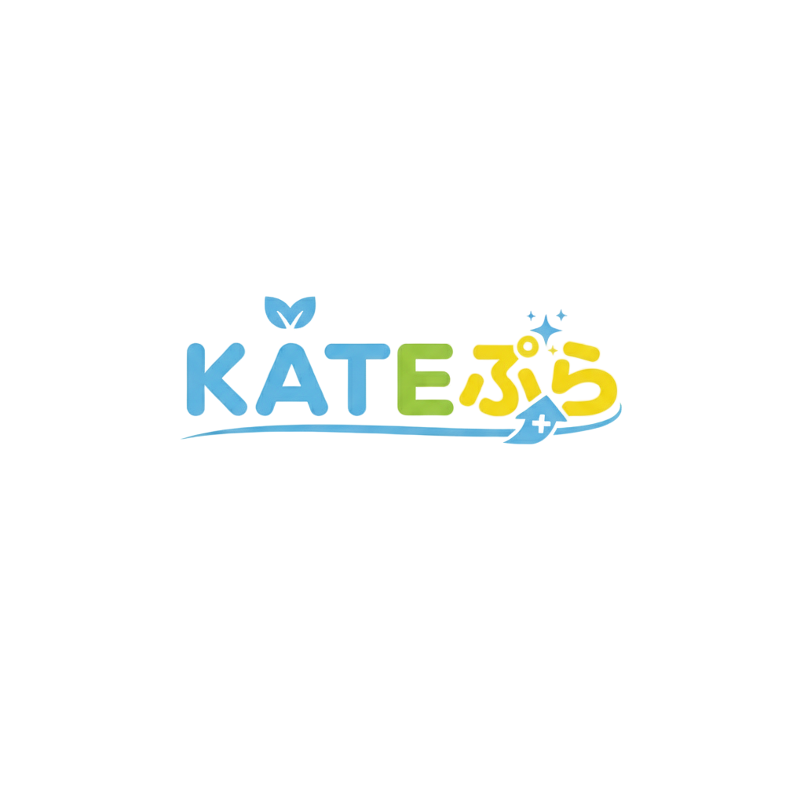

📐 KY模擬 数学 大問1・2
数字入れかえ式・自動生成オリジナル問題で計算＆小問を特訓
つまずきを、プラスに。
KATEぷら

このセットの進捗
0 / 14 問（0%） 累計 0 問
🔄 数字を変えて新しい問題に挑戦
※本アプリの問題は、過去問の
出題形式を参考に数値を入れかえて自動生成したオリジナル問題
です。特定の検定・試験の主催団体とは一切関係ありません。過去問そのものの複製・配布ではありません。
📗 大問1（計算）
📘 大問2（小問）
KY模擬 数学 大問1・2 練習 ｜ 提供：KATEぷら「つまずきを、プラスに。」
KATEぷら